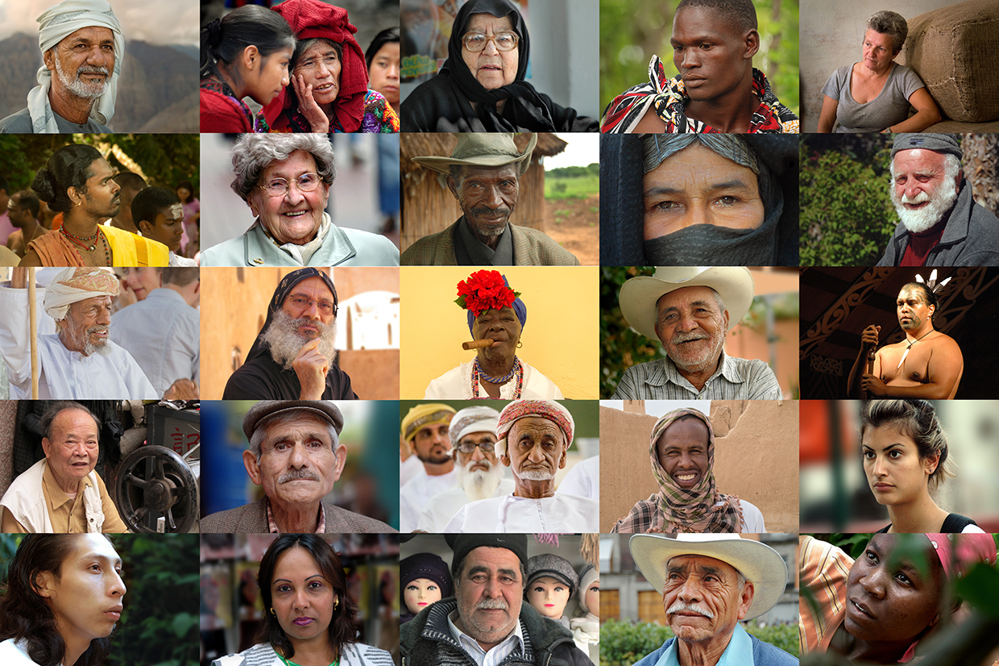

Welcome to the Course
- What does the term stakeholder mean?
- What is a stakeholder in a systematic review or map?
- Why might we want to engage with stakeholders in a review project?
- How do I identify and better understand my stakeholders?
- How can I engage with stakeholders before, during and after a review?
- What challenges might I face during stakeholder engagement?
If you have asked yourself any of the questions above, then this course may be for you.
The course will explain the role of stakeholder engagement in systematic reviews and other evidence syntheses. It will provide participants with the information necessary to plan their own stakeholder engagement activities in their next review.
The course will first explain what we mean by the term ‘stakeholder’ particularly in the context of systematic reviews. We'll then spend some time describing the benefits of stakeholder engagement, before moving on to introduce some methods for engaging with stakeholders throughout the review process, from planning, through conduct and to communication of the review.
This course is relevant to reviewers working in any discipline: any experienced systematic reviewer wanting to learn about engaging more with stakeholders, or people who are about to start a systematic review and want to ensure they plan their engagement well.

This course consists of a series of modules each including recorded presentations, background reading (essential and recommended), and practical exercises that will introduce the main aspects of engaging with stakeholders during evidence syntheses. At the end of the course there is a quiz to test and consolidate your understanding, and a chance to provide feedback to help improve the course.
Participants should have an understanding of evidence synthesis, and in particular systematic reviews. The course has many examples from environmental and sustainability science, but the methods are applicable and transferable across any topic.
Watch the following presentation that introduces the course and its content:
You can find the lecture handouts here.
This course is provided completely for free (also known as Open Education), meaning that all materials are accessible to everyone, everywhere with no charge. The course was made possible with generous funding from a range of organisations, including: Mistra; FORTE; and the Stockholm Environment Institute.
You may have already visited the Stakeholder Engagement in Evidence Synthesis website, but if not, check it out for related information, webinars and articles on the topic.

Once you have completed the course and passed the test (15/20 or 75% score), you can complete this form to request your certificate:
Get started on the first module!